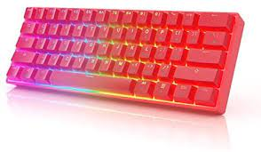
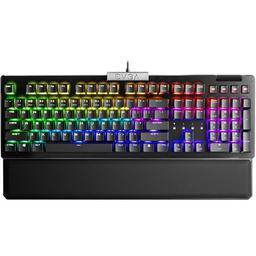

<html>
    <head>
     <title>Project</title>
    <link rel="stylesheet" href="styles.css">
    </head>
    </html>

  <link rel="preconnect" href="https://fonts.googleapis.com">
<link rel="preconnect" href="https://fonts.gstatic.com" crossorigin>
<link href="https://fonts.googleapis.com/css2?family=Roboto:wght@300&display=swap" rel="stylesheet">
<link rel="stylesheet" href="https://cdn.jsdelivr.net/npm/@fortawesome/fontawesome-free@6.2.0/css/fontawesome.min.css">


<nav>

  <div class="topnav">
      <a class="active" href="./index.html">Home</a>
      <a href="./about.html">About this website</a>
      <a href="./reveiws.html"> Reviews</a>
  
    </div>


</nav>


  <b1>
  
  Top 4 best gaming keyboards

  </b1>

<l1> There are tons of gaming keyboards in the market right now, from mechanical to membrane keyboards, 60% to full sized keyboards, theres just too much options.
  In this review, you will go over some of the top five keyboars and maby you will end up buying one. But before you do that, you must know what type of keyboard you want.
  There are mechanical keyboards and membrane keyboards. Mechanical keyboards is where there's a switch under the keycap and membrane keyboards is just rubber underneath the keycap. It
  is usually better to go with mechanical keyboards because there are different types of switches you can choose from and in membrane switches, there is just
  rubber which gives a sort of "mushy" feel, it will last a way shorter time and because of the material, and it is very hard to clean. Moving on to mechanical 
  keyboards, switches are different, some have different actuation points which is the key travel distance where the key is actually recognized by the keyboard. 
  So in gaming, it is usually good to have a lower actuation point such as 1.4mm or less because you can have faster reactions. But if you want to 
  use your keyboard for typing, having such low actuation points isnt much of a good idea because you can easily make typo errors.
  But thats not really a big deal because it happens on the first month or 2 when you get the keyboard and you will eventually get used to it.

</l1>
  

<dev style=" text-align: center; font-size: 6rem; font-family: "Roboto": ">
                                                                    1: GK61

<ok>



</ok>


    <button>
<a href="https://www.amazon.com/GK61-Swappable-Mechanical-Gaming-Keyboard/dp/B07QYHM32Q/ref=sr_1_9?crid=1ZF78P63O3JBM&keywords=gk61+mechanical+keyboard&qid=1667780374&sprefix=gk61%2Caps%2C136&sr=8-9" target="blank">

  Buy on amazon
  </button>
</a>


<button>
<a href="https://www.youtube.com/watch?v=dQw4w9WgXcQ" target="blank">

  watch review on youtube
  </button>
  </a>


<w>
   

  

  <p style="padding: 10px; border: 10px solid white; text-align: center; line-height: 1.5;">The HK gaming GK61 is a very good keyboard for its price.
          Has great build quality, very durable. It comes with customizable colors and rgb. It comes with a variety of switches(Gaterons optical and mechanical).
          You can get gateron yellows which actuate at 1mm. It is also hot sawpable.</p>

          </dev>

          
            <div class="pros-cons-container">
              <div class="pros-container">
                <h2 class="heading">Pros</h2>

                <ul class="pros">
                    <li>Comes with rgb(no software needed</li>
                    <li>comes with gateron yellow and silver swicthes</li>
                    <li>switches makes thocky sound</li>
                    <li>minimalistic look</li>
                    <li>very affordable</li>
                    <li>hot-swapable</li>
                    <li>comes with switch and keycap puller</li>

                </ul>
              </div>

              <div class="cons-container">
                <h2 class="heading">Cons</h2>

                <ul class="cons">
                    <li>lack of arrow keys(because it is 60% keyboard)</li>
                    <li>hard to find because it is no longer available on Amazon</li>
                    <li>doesnt come with backstand</li>
              </div>
            </div>


            <div class="pros-cons-container">
              <div class="pros-container">
                <h2 class="heading">Random facts about keyboard</h2>

                <ul class="pros">
                    <li>FULL RGB BACKLIT GAMING KEYBOARD – 16.8 million Color combinations, adjustable brightness levels and multiple different lighting effects. Plug & Play, no drivers needed.</li>
                    <li>GATERON OPTICAL SWITCHES – Extremely fast response time make these the best choice for getting an advantage in gaming. Hot-Swappable with other Optical switches. No solder or desolder necessary. Extremely durable switches rated for 100 million keystrokes.</li>
                    <li>FULLY PROGRAMMABLE - Macro recording, advanced lighting effects and customizations through software. Features multimedia keys through multiple layers. Full Anti Ghosting Mode n-key Rollover (NKRO) for ideal FPS, MOBA and MMO gaming experiences.</li>
                    <li>PRACTICAL FEATURES – Small form factor mini 60% Layout with 61 keys with individual backlighting. Spill and dust resistant to withstand accidental spills while playing. Switchable ABS Doubleshot keycaps that can be changed with the included keypuller.</li>
                    <li>COMPATABILITY WITH MAC & WINDOWS - Compatible with Windows 11, Win 10, Win 8, Win 7, Win Vista, Windows XP and Mac OS. Ideal Keyboard for all Environments works with all Computer or Laptop Brands and Gaming PCs. Compatible for Home and Office use. Detachable USB C to Type-A cable included.
                    </li>
              

                </ul>
              </div>

            
            </div>
          </div>


            


    <!  THIS IS THE END OF GK61 >
          
         <bruh style=" text-align: center; font-size: 3rem; font-family: "Roboto": ">
                                                                    2: Razer huntsman mini

<ok>


</ok>


    <button>
<a href="https://www.amazon.com/Razer-Huntsman-Mini-Gaming-Keyboard/dp/B08B3MHYPC/ref=sr_1_3?crid=1SEZPXP1SAN2O&keywords=razer%2Bhuntsman%2Bmini&qid=1667959021&s=electronics&sprefix=razer%2Bhuntsman%2Bmin%2Celectronics%2C136&sr=1-3&th=1" target="blank">

  Buy on amazon
  </button>
</a>


<button>
<a href="https://www.youtube.com/watch?v=dQw4w9WgXcQ" target="blank">

  watch review on youtube
  </button>
  </a>


<w>
   

  

  <p style="padding: 10px; border: 10px solid white; text-align: center; line-height: 2; ">The Razer Huntsman mini comes from a very popular brand as it has been known for its great quality and performance. The keyboard 
  comes in white and black(you can buy razer or 3rd party keycaps). It comes with razer optical switches made by razer that actuate at 1.1mm. You can also get them in clicky, linear, and analog switches.</p>

          </bruh>


          <dil class="prosconscontainer">
              <dil class="proscontainer">
                <h4 class="heading">Pros</h2>

                <uk class="pros">
                    <li>clean look</li>
                    <li>comes with razer optical, clicky, or linear switches</li>
                    <li>made by trustwothy and reliable brand</li>
                    <li>has stand at bottom of keyboard</li>
                    <li>great quality</li>
                    <li>used by lots of famous youtubers and twitch streamers</li>
                    <li>oil resistant keycaps</li>

                </uk>
              </dil>

              <dil class="conscontainer">
                <h4 class="heading">Cons</h2>

                <uk class="cons">
                    <li>pretty expensive</li>
                    <li>lacks arrow keys(its a 60% keyboard)</li>
                    <li>not hotswapable</li>
              </dil>
            </dil>

            <dil class="prosconscontainer">
                <dil class="proscontainer">
                  <h4 class="heading">Random facts about keyboard</h2>
  
                  <uk class="pros">
                      <li>Faster Than Legacy Mechanical Switches: Razer Optical switches use light-based actuation, registering key presses at the speed of light (30% shorter actuation distance than other clicky switches at 1.5 mm) with satisfying, clicky feedback</li>

                      <li>Ultimate Personalization & Gaming Immersion with Razer Chroma: Fully syncs with popular games, Razer hardware, Philips Hue, and gear from 30plus partners; supports 16.8 million colors on individually backlit keys</li>

                      <li>Quality, Aluminum Construction: Covered with a matte, aluminum top frame for increased structural integrity</li>

                      <li>Oil-Resistant Doubleshot PBT Keycaps: Made of textured, high-grade PBT for a more durable and textured finish less prone to long-term grime buildup</li>

                      <li>Fully Programmable Macros: Razer Hypershift allows for all keys and keypress combinations to be remapped to execute complex commands</li>
         
                  </h4>
                </dil>

                </dil>
            </dil>
                
            
            
            <!  THIS IS THE END OF RAZER HUNTSMAN MINI >
            
            
            <bad style=" text-align: center; font-size: 3rem; font-family: "Roboto": ">
                3: Evga z15

<ol>



</ol>


<button>
<a href="https://www.amazon.com/EVGA-Keyboard-Hotswappable-Mechanical-821-W1-15US-KR/dp/B08VNT658R/ref=sr_1_1?crid=F0FTBTCYJ7MG&keywords=evga+z15&qid=1668041195&sprefix=evga+z15%2Caps%2C139&sr=8-1" target="blank">

Buy on amazon
</button>
</a>


<button>
<a href="https://www.youtube.com/watch?v=dQw4w9WgXcQ" target="blank">

watch review on youtube
</button>
</a>


<p style="padding: 10px; border: 10px solid white; text-align: center; line-height: 1.5;">Made from the brand that makes computer parts, the Evga z15 is a full sized keyboard with a  detachable wrist pad. Has customizable rgb
(software required) featuring linear kail speed silver switches.</p>

                </bad>
                

                <dil class="prosconscontainer">
                    <dil class="proscontainer">
                      <h4 class="heading">Pros</h2>
      
                      <uk class="pros">
                          <li>clean look</li>
                          <li>comes with kail speed silver linear switches (actuates at 1.1 mm) </li>
                          <li>made by a popular brand</li>
                          <li>has a comfortable wrist wrest that is dettachable</li>
                          <li>great quality</li>
      
                      </uk>
                    </dil>
      
                    <dil class="conscontainer">
                      <h4 class="heading">Cons</h2>
      
                      <uk class="cons">
                          <li>very big</li>
                          <li>only comes in one color(black)</li>
                        
                    </dil>
                  </dil>


                  <dil class="prosconscontainer">
                    <dil class="proscontainer">
                      <h4 class="heading">Random facts about keyboard</h2>
      
                      <uk class="pros">
                          <li>Hot swap sockets allow you to customize the feel of your Z15 RGB keyboard with Kailh's 3pin mechanical switches. Featuring Kailh Speed Silver switches with N-key rollover to ensure that you get exactly the type of feedback and experience you want.</li>

                          <li>Powered by a 32-bit Arm Cortex-M33 core USB microprocessor supporting 4,000Hz polling rate. Offering the most advanced gaming keyboard experience, 4K Hz is 4x more responsive and inputs can be more precise. </li>

                          <li>Per key RGB lighting with 14 pre set lighting effects, customizable via the UNLEASH RGB software</li>

                          <li>Volume Scroll Wheel, and Multimedia Keys. Full control at the touch of your fingers</li>

                          <li>Detatchable magnetic palm rest</li>


      
                      </uk>
                    </dil>

                    <dil class="prosconscontainer">
                        <dil class="proscontainer">
                          <h4 class="heading">Download RGB software here</h2>
          
                          <uk class="pros">
                            <li><a href="https://www.evga.com/unleash/">click here if you want to download the RGB software</a></li>
                          </uk>
                          </h4>
                        </dil>
                    </dil>
            </dil>

  

           
            
            
              
            
            <dev style=" text-align: center; font-size: 6rem; font-family: "Roboto": ">
                                                                                4: Razer huntsman tournament
            
            <ok>
            
            
            
            </ok>
            
            
                <button>
            <a href="https://www.amazon.com/Razer-Huntsman-Tournament-Tenkeyless-Keyboard/dp/B07V25YPVW/ref=sr_1_1?crid=3Q3KH98FM8D9S&keywords=razer+huntsman+tournament&qid=1668128877&s=electronics&sprefix=razer+huntsman+tournament%2Celectronics%2C125&sr=1-1" target="blank">
            
              Buy on amazon
              </button>
            </a>
            
            
            
            
            <button>
            <a href="https://www.youtube.com/watch?v=dQw4w9WgXcQ" target="blank">
            
              watch review on youtube
              </button>
              </a>
            
            
            <w>
               
            
              
            
              <p style="padding: 10px; border: 10px solid white; text-align: center; line-height: 1.5;">The Razer huntsman tournament is a TKL-sized board made by as we all know Razer. It shares lots
              of similarities with the huntsman mini.</p>
            
                      </dev>
            
                      
                        <div class="pros-cons-container">
                          <div class="pros-container">
                            <h2 class="heading">Pros</h2>
            
                            <ul class="pros">
                                <li>comes with razer optical, clicky, or linear switches</li>
                                <li>optical and linear switches actuate at 1mm</li>
                                <li>very good keyboard to consider if you dont like huntsman mini because its to small</li>
                                <li>made by trustworth and reliable brand</li>
                                <li>mid sized</li>
                                <li>oil resistand key-caps</li>
            
                            </ul>
                          </div>
            
                          <div class="cons-container">
                            <h2 class="heading">Cons</h2>
            
                            <ul class="cons">
                                <li>"boring" look</li>
                                <li>switches are not hotswapable</li>
                          </div>
                        </div>
            
            
                        <div class="pros-cons-container">
                          <div class="pros-container">
                            <h2 class="heading">Random facts about keyboard</h2>
            
                            <ul class="pros">
                                <li>Faster Than Traditional Mechanical Switches: Razer Linear Optical switch technology uses optical beam-based actuation, registering key presses at the speed of light (15-30% shorter actuation distance than other linear switches at 1.0 millimeter)</li>
                                <li>Ultimate Personalization & Gaming Immersion with Razer Chroma: Fully syncs with popular games, Razer hardware, Philips Hue, and gear from 30 plus partners; supports 16.8 million colors on individually backlit keys</li>
                                <li>Quality, Aluminum Construction: Covered with a matte, aluminum top frame for increased structural integrity</li>
                                <li>Tournament-Ready Design: A tenkeyless design with a detachable USB-C cable provides a portable form-factor for on-the-go gamers</li>
                                <li>Oil-Resistant Doubleshot PBT Keycaps: Made of textured, high-grade PBT for a more durable and textured finish less prone to long-term grime buildup</li>
                                <li>Fully Programmable Macros: Razer Hypershift allows for all keys and keypress combinations to be remapped to execute complex commands</li>
                          
            
                            </ul>
                          </div>
            
                        
                        </div>
                      </div>


                      <end> So hopefully this review has been helpful to you and you might of learned a few things. If you did end up liking the review,
                        please share it to your friends or anyone who is looking for keyboards.
                      </end>
